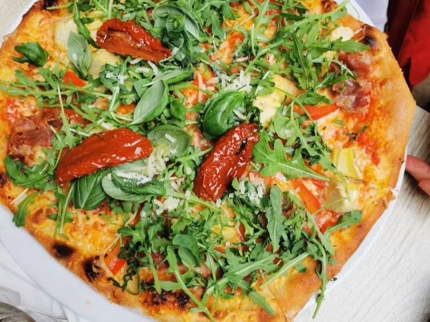
Dun en knapperig, vers uit de oven
Gasten komen steeds terug voor hetzelfde: een dunne bodem met een knapperige, goed gebakken rand.
Pizzeria in de Stoofstraat · hartje Den Bosch


Gasten komen steeds terug voor hetzelfde: een dunne bodem met een knapperige, goed gebakken rand.
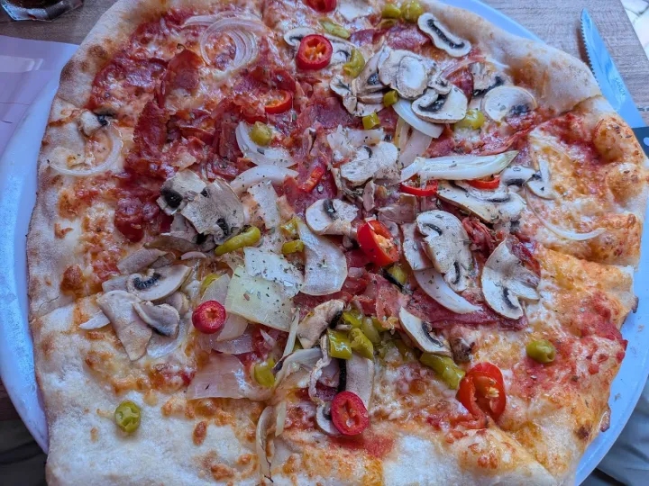
Pizza's vanaf € 13,50, en allemaal flink belegd. Je gaat hier niet met honger de deur uit.

Tot en met 4 personen loop je zo naar binnen. Vanaf 5 leg je online in een halve minuut een tafel vast.

Of afhalen op de tijd die jij kiest. Betalen doe je bij ontvangst, met pin of contant.
Van Margherita tot Parma met truffelmayonaise. Deze zes gaan het vaakst de oven uit.
 € 19,00
€ 19,00Tomaat, kaas, mozzarella, schijfjes tomaat, olijven, Parmaham, rucola, Parmezaanse kaas, oregano en truffelmayonaise
Tomaat, kaas, pancetta, basilicum, schijfjes tomaat, zongedroogde tomaat, artisjokken, Parmezaanse kaas en rucola
 € 17,00
€ 17,00Tomaat, kaas, pikante worst, ui, champignons, groene pepers, rode pepers en oregano
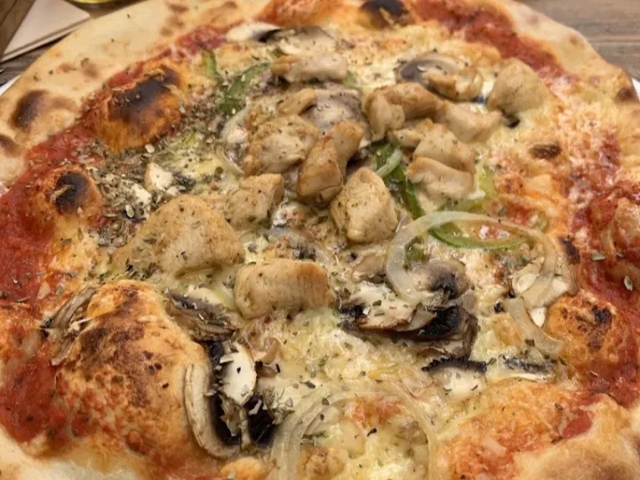
€ 17,00Tomaat, kaas, pikante stukjes kip, ui, paprika, champignons en oregano
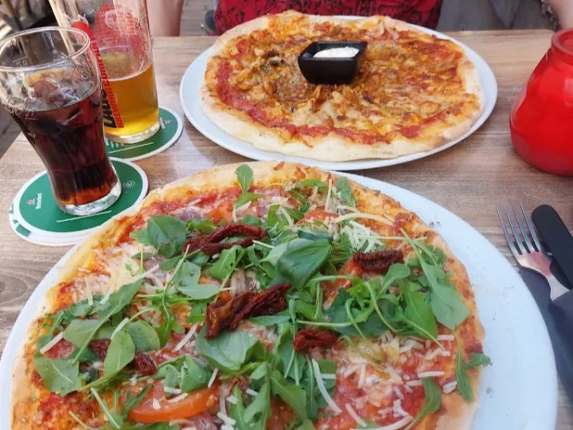
€ 16,50Tomaat, mozzarella, rucola, Parmezaanse kaas, gemarineerde tomaten en oregano
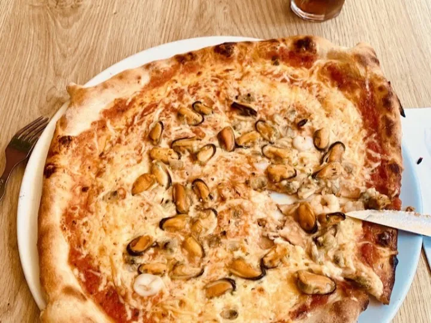
€ 17,50Tomaat, kaas, garnalen, kokkels, inktvis, mosselen en oregano
Het staat onder de naam op de gevel: pizza e più. 127 gerechten en dranken in totaal.
Tussen de Binnendieze en de Markt herken je ons aan de ramen met sepiafoto’s van Venetië en Verona. Daarachter: een ongedwongen Italiaanse eetzaal, ervoor een van de gezelligste terrassen van de Uilenburg.
Echte reviews, met de foto’s die gasten zelf maakten.
Een van de beste pizza's die we ooit hebben gegeten. Er is zoveel wat klopt: het deeg, de korst, de ingrediënten, het goede bestek en de fijne bediening. Alles was tot in de puntjes verzorgd en ik kom hier met plezier terug.
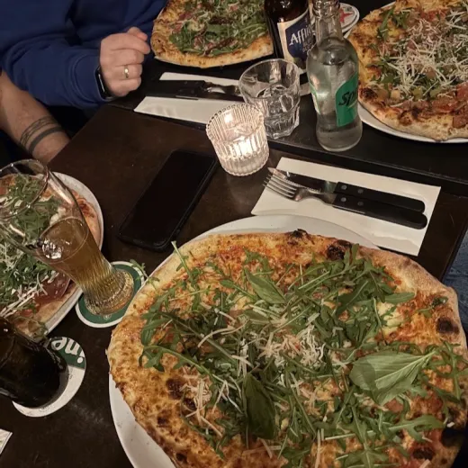
“Ik ging er met vijf vrienden heen op aanraden van iemand, en we vonden het allemaal geweldig. We bestelden van alles: bruschetta, meerdere pizza's, muntthee, Irish coffee en wijn, samen € 133,80 inclusief fooi. Het eten was uitstekend en de bediening vriendelijk, betrokken en attent. We waren zo verdiept in het eten en het gesprek dat we amper foto's hebben gemaakt.”
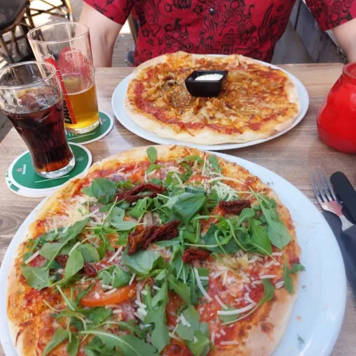
“De beste pizzeria waar ik in Nederland ben geweest. Een dikke aanrader. Probeer zeker de Pizza Franco, die was fantastisch.”
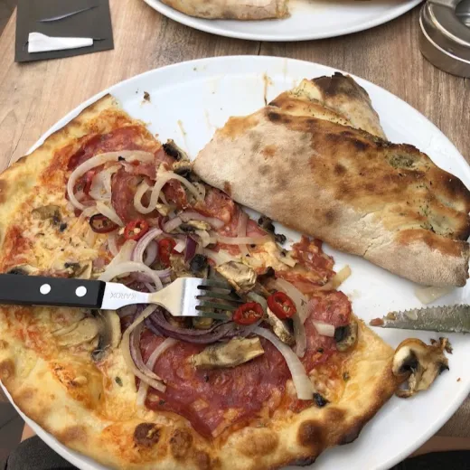
“Een van de beste pizzeria's waar ik ooit ben geweest. Ze maakten een Diavola voor me die niet eens op de kaart stond, en die was geweldig. De bodem was knapperig, de kaas precies goed, en het personeel was gastvrij, snel en heel beleefd.”
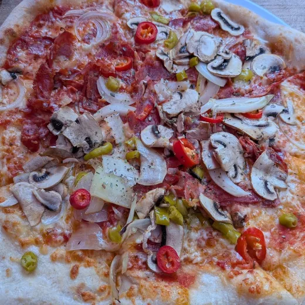
“Gezellige en sfeervolle pizzeria met lekkere bruschetta, heerlijke dunne en knapperige pizza, royaal beleg en gastvrij personeel. Een fijne plek met goed eten en een goede sfeer.”
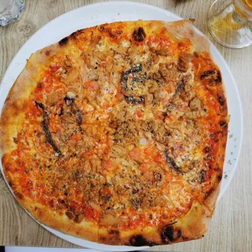
“De beste plek in Den Bosch voor echte pizza uit de oven. De bodem is lekker knapperig en de kaas en het beleg zijn elke keer goed. Een goede keuze als je op zoek bent naar authentieke pizza.”
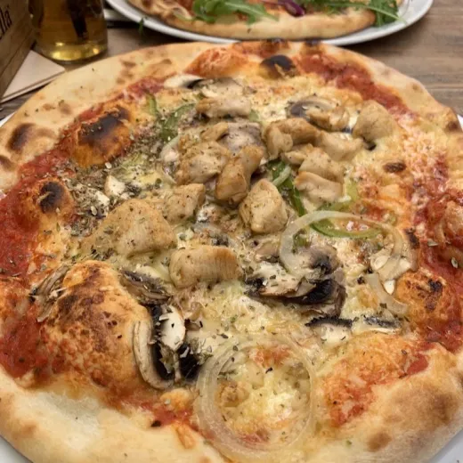
“Het personeel was erg vriendelijk, en dit was de eerste keer dat ik een Pizza Pollo at met echt smaakvolle kip. De bodem was iets zachter dan verwacht, maar de pizza was nog steeds heel goed. Het restaurant is vanbinnen ook mooi ingericht en ik ga zeker nog eens.”
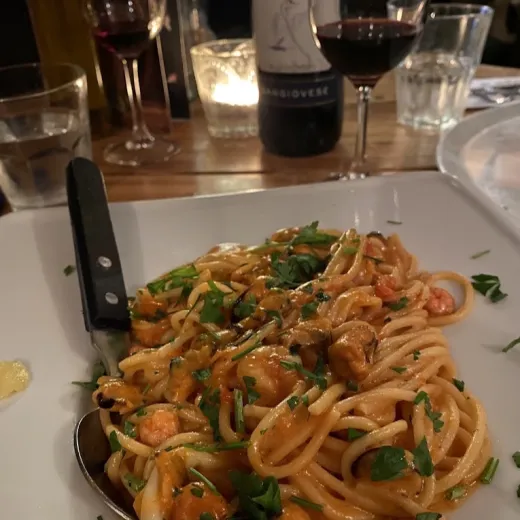
“Authentiek Italiaans restaurant met een schattig klein terras, goede wijn en nog betere pizza. Laat je niet misleiden door de porties pasta die klein lijken: ze zijn verrassend vullend. Een fijne plek voor een echte Italiaanse maaltijd.”
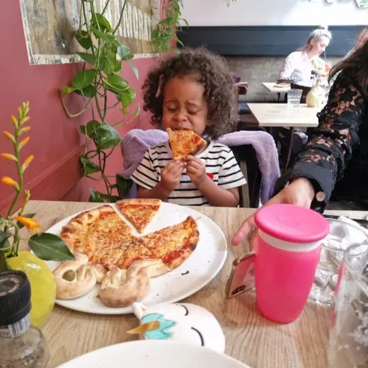
“De beste pizza's van Den Bosch, zeker voor de prijs. Ik vond het interieur en de sfeer ook heel fijn. Het is er klein, en juist daardoor voelt het intiem en idyllisch.”
“Geweldige pizza, heel snelle bediening en vriendelijk personeel. Waarschijnlijk een van de beste plekken voor pizza in Den Bosch.”
“Heel lekkere knapperige dunne bodem, opgewekte bediening en comfortabel zitten. Van begin tot eind een prettige ervaring.”
“Fijne, nuchtere en gezellige plek. Goed en eerlijk Italiaans eten en heel vriendelijk personeel. Zeker een bezoek waard.”
Alle 127 gerechten en dranken online, met alle prijzen erbij.
Zo snel mogelijk, of op het kwartier dat jou uitkomt. Bezorgen is gratis, zonder minimumbedrag.
Je bestelling staat klaar op Stoofstraat 10. Betalen doe je bij ontvangst, met pin of contant.
Bestelsysteem powered by Mettafel
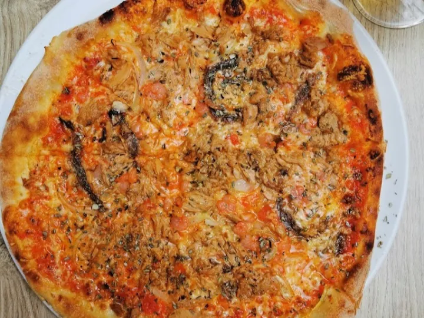
Loop gewoon binnen op Stoofstraat 10. Reserveren hoeft nooit.
Dagelijks open vanaf 16.30 uur